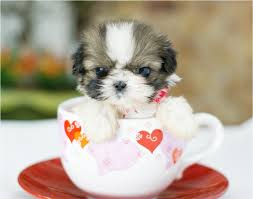

<ul class="past-talks">
	{% for talk in site.talks reversed %}
		<li>
			{% if talk.thumbnail-image %}
			<div class="img-container">
				
			</div>
				{% else %}
					<div class="img-container">
						
					</div>
			{%endif%}
		{% include teaser.html post=talk %}
		</li>
	{% endfor %}
</ul>